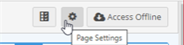
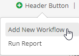
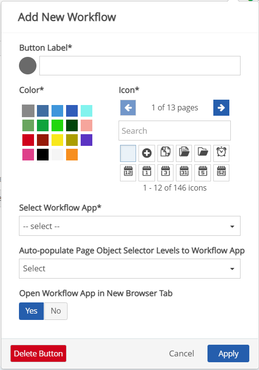

Workflow Application Builder header buttons allows users to go from the Portal to a Workflow Application Builder seamlessly. Multiple header buttons can be added to ease users experience in navigating between pages within the software.
To Access a Workflow Application Builder from the Portal Using a Header Button
In the Portal, navigate to a portal page with header buttons.
Click the drop down icon in the header. Available header buttons will appear.
There may be one or more header buttons to choose from. These header buttons can either be Workflow Application Builder header buttons or Run Report header buttons.
Click a Workflow Application Builder headerbutton. The Workflow Application Builder page will open.
To Add a Customized Header Button that Links to a Workflow Application Builder:
In the Portal, navigate to a portal page, and then click the Page Settings icon

On the Page Settings window, click + Header Button. A drop-down menu will open.

Click Add New Workflow. The Add New Workflow window will open.

On the Add New Workflow window, enter a Button Label.
Select a button color and an icon. A preview will display next to the Button Label field.
Select a Workflow App that the button will link to. The list displays available WAB apps in the system. To link to a custom app, select Other App and enter the app name.
For Auto-populate Page Object Selector Levels to Workflow App: This option will auto-populate the object selector on the New Item page with the objects selected for the page. Choose which object levels should auto-populate.
For Open Workflow App in New Browser Tab: You can choose whether to open the app in a new browser tab, or to open in the same window as the Portal (allowing for a smoother transition).
Click Apply. The Workflow Application Builder header button is added to the header of the portal page.